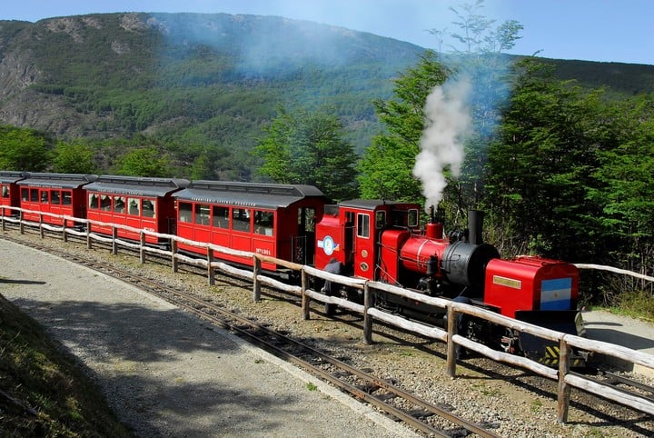

-
¿sabes que significa usuhaia?
La palabra Ushuaia proviene del idioma yagán: ush ('al fondo') y waia ('bahía' o 'caleta'), y significa 'bahía profunda o bahía al fondo'. El acta de creación de la Subprefectura, en 1884, cita el nombre «Oshovia», una de las muchas variaciones ortográficas del vocablo.5 Su gentilicio es "ushuaiense". El nombre suele pronunciarse "u-sua-ia" (AFI: [uˈswa.ja]), una excepción a las reglas ortográficas del castellano, pues la «s» forma sílaba con la siguiente «u» a pesar de la «h». Considerando que podría darse una pronunciación errónea "Usuaía", vale aclarar que la palabra Ushuaia no lleva tilde, y que el acento prosódico está en la primera
¿en donde se encuentra usuahia?
La ciudad de Ushuaia se encuentra a 120 km (en línea recta) de Río Grande, en la misma provincia, a 251 km de Punta Arenas, en la Región de Magallanes y de la Antártica Chilena, Chile, y a 2377 km de Buenos Aires, capital de Argentina. 1150 km la separan de la base Esperanza en la Antártida Argentina. Isla de los Lobos. Ushuaia está emplazada sobre la bahía homónima, rodeada al oeste, norte y este por los Andes Fueguinos. Desde la posición del resto de Argentina, es la única ciudad del país a la que se accede cruzando parte de la cordillera de los Andes, que recorre el borde sur de la isla Grande de Tierra del Fuego. Para acceder a Ushuaia se deben sortear dos estribaciones mayores de los Andes Fueguinos mediante la Ruta Nacional 3: la sierra Alvear mediante el paso cordillerano Garibaldi, y la sierra Sorondo-Montes Bridges mediante el valle del río Olivia.Por este motivo, en Argentina se la considera la única ciudad trasandina, aunque para acceder a ella no haya que cruzar la totalidad de la cadena Andina. De acuerdo con la clasificación de los mares de la Organización Hidrográfica Internacional,Ushuaia es, además, el único puerto argentino sobre el océano Pacífico, siempre y cuando se considere al Canal Beagle como parte de dicho océano. Sin embargo, durante el Conflicto del Beagle, el Estado argentino especificó al mencionado canal como un paso interoceánico, pues de otro modo contradiría los tratados limítrofes firmados con Chile.
Lugares turisticas de usuhaia
1. Navegación por el Canal Beagle Paralelo 55° sur, entre los meridianos 71° y 66° oeste. Esa es la ubicación del Canal Beagle, que conecta al océano Atlántico con el Pacífico. Hay varias empresas que organizan navegaciones a las islas Alicia, Pájaros, Lobos y Bridges, donde se puede observar la fauna del lugar. Un paso obligado de la excursión -y también la fotografía más buscada- es el Faro Les Eclaireurs, construido en 1919, que se convirtió en un emblema de la ciudad.
2. Cerro Castor En invierno, es un paraíso para los esquiadores. Por su ubicación, el centro de esquí tiene nieve cuando otros del país ya dieron por cerrada la temporada. Ofrece más de 30 pistas di|qxd ferentes -un total de 34 kilómetros esquiables- a sólo 25 kilómetros de la ciudad. Aunque su fuerte es la temporada de invierno, durante los meses cálidos también se puede disfrutar de caminatas a través de los turbales. El destino final son los diques de los castores, que fueron introducidos en la década del 40 .
3. Laguna Esmeralda Ubicada a sólo 12 kilómetros del centro de la ciudad, es uno de los circuitos de trekking más clásicos de Ushuaia. Los senderos están bien señalizados y se pueden disfrutar durante todo el año, aunque en invierno hay que tener algunas precauciones con el hielo. El camino es una delicia, una larga sucesión de bosques de lengas, turbas, ríos y lagos de colores inverosímiles. La llegada a la laguna -alimentada por los glaciares- ofrece una de las mejores postales de la Patagonia.
4. Antigua Casa Beban Visitar la casa es conocer un pedazo de la historia de Ushuaia. Fue construida en 1911 y adquirida por catálogo a Suecia. Allí funcionó el Banco Nación, un hotel, una agencia de venta de autos y fue residencia de la familia Beban hasta la década del 60, entre otros usos. Se pueden visitar sus dormitorios, la sala, las galerías y su gran cocina. Monumento Histórico Nacional desde 2005, el lugar construido en madera y chapa alberga a un pequeño museo y es sede de exposiciones y charlas.
Ushuaia: Tren del Fin del Mundo
En 7 km de recorrido pasa por el río Pipo, la cascada La Macarena y los bosques.
-
-